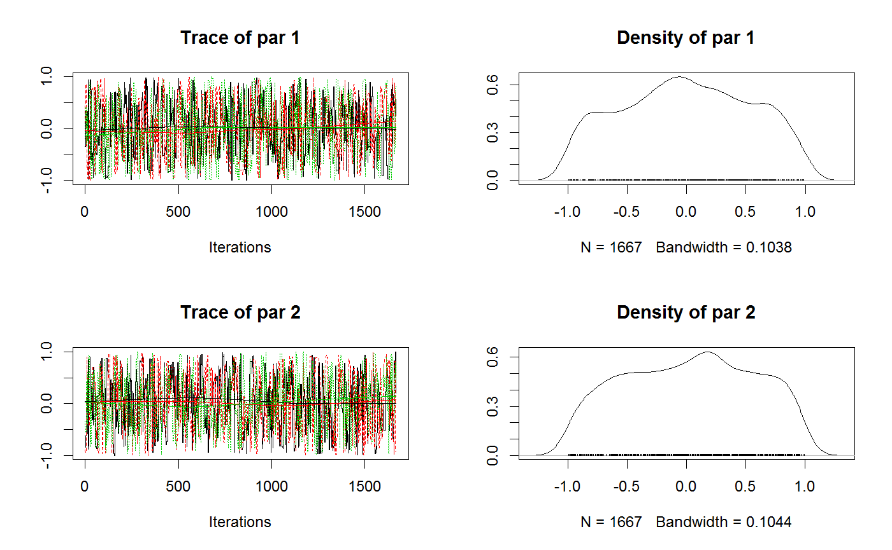
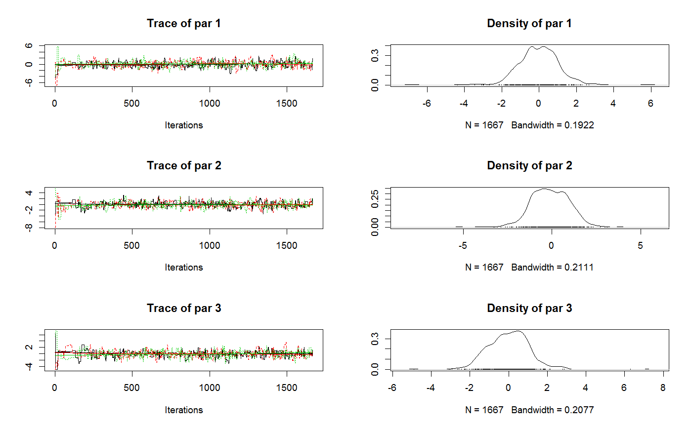

Calcluated the marginal likelihood from a set of MCMC samples
marginalLikelihood(sampler, numSamples = 1000, method = "Chib", ...)
| sampler | an object that implements the getSample function, i.e. a mcmc / smc Sampler (list) |
|---|---|
| numSamples | number of samples to use. How this works, and if it requires recalculating the likelihood, depends on the method |
| method | method to choose. Currently available are "Chib" (default), the harmonic mean "HM", sampling from the prior "prior", and bridge sampling "Bridge". See details |
| ... | further arguments passed to |
The function currently implements four ways to calculate the marginal likelihood. The recommended way is the method "Chib" (Chib and Jeliazkov, 2001). which is based on MCMC samples, but performs additional calculations. Despite being the current recommendation, note there are some numeric issues with this algorithm that may limit reliability for larger dimensions.
The harmonic mean approximation, is implemented only for comparison. Note that the method is numerically unrealiable and usually should not be used.
The third method is simply sampling from the prior. While in principle unbiased, it will only converge for a large number of samples, and is therefore numerically inefficient.
The Bridge method uses bridge sampling as implemented in the R package "bridgesampling".
Chib, Siddhartha, and Ivan Jeliazkov. "Marginal likelihood from the Metropolis-Hastings output." Journal of the American Statistical Association 96.453 (2001): 270-281.
# Harmonic mean works OK for a low-dim case with likelihood <- function(x) sum(dnorm(x, log = TRUE)) prior = createUniformPrior(lower = rep(-1,2), upper = rep(1,2)) bayesianSetup <- createBayesianSetup(likelihood = likelihood, prior = prior) out = runMCMC(bayesianSetup = bayesianSetup, settings = list(iterations = 5000))#> Running DEzs-MCMC, chain 1 iteration 300 of 5001 . Current logp -3.231946 -3.22838 -3.702234 . Please wait! Running DEzs-MCMC, chain 1 iteration 600 of 5001 . Current logp -3.650859 -3.465972 -3.512521 . Please wait! Running DEzs-MCMC, chain 1 iteration 900 of 5001 . Current logp -3.609262 -3.471144 -3.339216 . Please wait! Running DEzs-MCMC, chain 1 iteration 1200 of 5001 . Current logp -3.58876 -3.691328 -3.307711 . Please wait! Running DEzs-MCMC, chain 1 iteration 1500 of 5001 . Current logp -3.821757 -3.323898 -3.385563 . Please wait! Running DEzs-MCMC, chain 1 iteration 1800 of 5001 . Current logp -3.23847 -3.725506 -3.288343 . Please wait! Running DEzs-MCMC, chain 1 iteration 2100 of 5001 . Current logp -3.394055 -3.738272 -3.327836 . Please wait! Running DEzs-MCMC, chain 1 iteration 2400 of 5001 . Current logp -3.548363 -3.569064 -3.510509 . Please wait! Running DEzs-MCMC, chain 1 iteration 2700 of 5001 . Current logp -3.759792 -3.226294 -3.723042 . Please wait! Running DEzs-MCMC, chain 1 iteration 3000 of 5001 . Current logp -3.645238 -3.313713 -3.421209 . Please wait! Running DEzs-MCMC, chain 1 iteration 3300 of 5001 . Current logp -3.551052 -3.465299 -3.66877 . Please wait! Running DEzs-MCMC, chain 1 iteration 3600 of 5001 . Current logp -3.272982 -3.333179 -3.631589 . Please wait! Running DEzs-MCMC, chain 1 iteration 3900 of 5001 . Current logp -3.250819 -3.700023 -3.709891 . Please wait! Running DEzs-MCMC, chain 1 iteration 4200 of 5001 . Current logp -3.312153 -3.270711 -3.244133 . Please wait! Running DEzs-MCMC, chain 1 iteration 4500 of 5001 . Current logp -3.728044 -3.569831 -4.068991 . Please wait! Running DEzs-MCMC, chain 1 iteration 4800 of 5001 . Current logp -3.370315 -3.700947 -3.653093 . Please wait! Running DEzs-MCMC, chain 1 iteration 5001 of 5001 . Current logp -3.400083 -3.660208 -3.874071 . Please wait!#>plot(out)marginalLikelihood(out, numSamples = 500)[[1]]#> Warning: Note to the user: be aware that marginal likelihood calculations are notoriously prone to numerical stability issues. Especially in high-dimensional parameter spaces, there is no guarantee that the algorithms implemented in this function converge in all cases. Proceed at your own risk!#> [1] -2.045501marginalLikelihood(out, method = "HM", numSamples = 500)[[1]]#> Warning: Note to the user: be aware that marginal likelihood calculations are notoriously prone to numerical stability issues. Especially in high-dimensional parameter spaces, there is no guarantee that the algorithms implemented in this function converge in all cases. Proceed at your own risk!#> [1] -2.148932marginalLikelihood(out, method = "Prior", numSamples = 500)[[1]]#> Warning: Note to the user: be aware that marginal likelihood calculations are notoriously prone to numerical stability issues. Especially in high-dimensional parameter spaces, there is no guarantee that the algorithms implemented in this function converge in all cases. Proceed at your own risk!#> [1] -2.144425marginalLikelihood(out, method = "Bridge", numSamples = 500)[[1]]#> Iteration: 1 #> Iteration: 2 #> Iteration: 3 #> Iteration: 4 #> Iteration: 5 #> Iteration: 6 #> Iteration: 7#> Warning: Note to the user: be aware that marginal likelihood calculations are notoriously prone to numerical stability issues. Especially in high-dimensional parameter spaces, there is no guarantee that the algorithms implemented in this function converge in all cases. Proceed at your own risk!#> [1] -2.108433# True marginal likelihood (brute force approximation) marginalLikelihood(out, method = "Prior", numSamples = 10000)[[1]]#> Warning: Note to the user: be aware that marginal likelihood calculations are notoriously prone to numerical stability issues. Especially in high-dimensional parameter spaces, there is no guarantee that the algorithms implemented in this function converge in all cases. Proceed at your own risk!#> [1] -2.152117# Harmonic mean goes totally wrong for higher dimensions - wide prior. # Same goes for standard bridge sampling. # Could also be a problem of numeric stability of the implementation likelihood <- function(x) sum(dnorm(x, log = TRUE)) prior = createUniformPrior(lower = rep(-10,3), upper = rep(10,3)) bayesianSetup <- createBayesianSetup(likelihood = likelihood, prior = prior) out = runMCMC(bayesianSetup = bayesianSetup, settings = list(iterations = 5000))#> Running DEzs-MCMC, chain 1 iteration 300 of 5001 . Current logp -12.3117 -16.32338 -13.25312 . Please wait! Running DEzs-MCMC, chain 1 iteration 600 of 5001 . Current logp -13.15733 -12.68131 -14.6254 . Please wait! Running DEzs-MCMC, chain 1 iteration 900 of 5001 . Current logp -12.55761 -12.41566 -12.51362 . Please wait! Running DEzs-MCMC, chain 1 iteration 1200 of 5001 . Current logp -11.8798 -12.53557 -14.97952 . Please wait! Running DEzs-MCMC, chain 1 iteration 1500 of 5001 . Current logp -12.97593 -12.59545 -13.68896 . Please wait! Running DEzs-MCMC, chain 1 iteration 1800 of 5001 . Current logp -12.97854 -13.25449 -12.38997 . Please wait! Running DEzs-MCMC, chain 1 iteration 2100 of 5001 . Current logp -12.13808 -13.44797 -14.34677 . Please wait! Running DEzs-MCMC, chain 1 iteration 2400 of 5001 . Current logp -11.90999 -12.65168 -14.10616 . Please wait! Running DEzs-MCMC, chain 1 iteration 2700 of 5001 . Current logp -13.22604 -13.94732 -12.74675 . Please wait! Running DEzs-MCMC, chain 1 iteration 3000 of 5001 . Current logp -12.94641 -11.99008 -12.02827 . Please wait! Running DEzs-MCMC, chain 1 iteration 3300 of 5001 . Current logp -11.80098 -13.23051 -16.26073 . Please wait! Running DEzs-MCMC, chain 1 iteration 3600 of 5001 . Current logp -12.41389 -12.22136 -14.67628 . Please wait! Running DEzs-MCMC, chain 1 iteration 3900 of 5001 . Current logp -14.31968 -14.49065 -12.45884 . Please wait! Running DEzs-MCMC, chain 1 iteration 4200 of 5001 . Current logp -12.56762 -14.59702 -12.7141 . Please wait! Running DEzs-MCMC, chain 1 iteration 4500 of 5001 . Current logp -12.98071 -13.00499 -13.57345 . Please wait! Running DEzs-MCMC, chain 1 iteration 4800 of 5001 . Current logp -12.01666 -12.73201 -12.8051 . Please wait! Running DEzs-MCMC, chain 1 iteration 5001 of 5001 . Current logp -14.10143 -12.14869 -14.50727 . Please wait!#>plot(out)marginalLikelihood(out, numSamples = 500)[[1]]#> Warning: Note to the user: be aware that marginal likelihood calculations are notoriously prone to numerical stability issues. Especially in high-dimensional parameter spaces, there is no guarantee that the algorithms implemented in this function converge in all cases. Proceed at your own risk!#> [1] -8.986955marginalLikelihood(out, method = "HM", numSamples = 500)[[1]]#> Warning: Note to the user: be aware that marginal likelihood calculations are notoriously prone to numerical stability issues. Especially in high-dimensional parameter spaces, there is no guarantee that the algorithms implemented in this function converge in all cases. Proceed at your own risk!#> [1] -38.51889marginalLikelihood(out, method = "Prior", numSamples = 500)[[1]]#> Warning: Note to the user: be aware that marginal likelihood calculations are notoriously prone to numerical stability issues. Especially in high-dimensional parameter spaces, there is no guarantee that the algorithms implemented in this function converge in all cases. Proceed at your own risk!#> [1] -9.173093marginalLikelihood(out, method = "Bridge", numSamples = 500)[[1]]#> Iteration: 1 #> Iteration: 2 #> Iteration: 3 #> Iteration: 4 #> Iteration: 5 #> Iteration: 6 #> Iteration: 7 #> Iteration: 8 #> Iteration: 9 #> Iteration: 10 #> Iteration: 11 #> Iteration: 12 #> Iteration: 13 #> Iteration: 14 #> Iteration: 15 #> Iteration: 16 #> Iteration: 17 #> Iteration: 18#> Warning: Note to the user: be aware that marginal likelihood calculations are notoriously prone to numerical stability issues. Especially in high-dimensional parameter spaces, there is no guarantee that the algorithms implemented in this function converge in all cases. Proceed at your own risk!#> [1] -41.42371# True marginal likelihood (brute force approximation) marginalLikelihood(out, method = "Prior", numSamples = 10000)[[1]]#> Warning: Note to the user: be aware that marginal likelihood calculations are notoriously prone to numerical stability issues. Especially in high-dimensional parameter spaces, there is no guarantee that the algorithms implemented in this function converge in all cases. Proceed at your own risk!#> [1] -9.229592